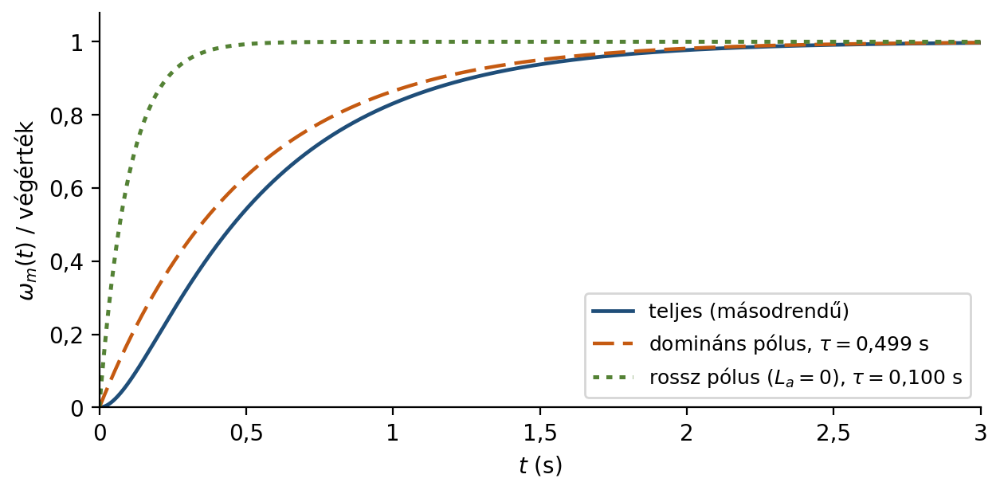
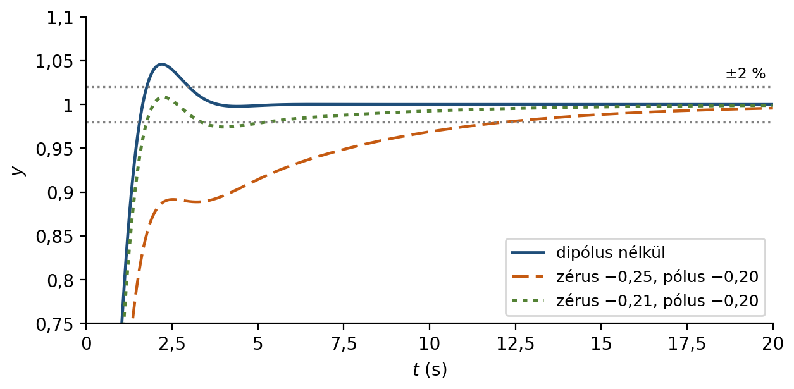

8.3 Magasabb rendű rendszerek,
domináns pólusok és zérusok hatása
8.3.1 Motiváció
A DC-motor pozíciókörében
V/rad mellett a motor elsőrendű sebességmodelljével számolva
túllövést jósolunk. A teljes motormodell szimulációja viszont
-ot
ad. A teljes zárt körnek három pólusa van:
és
.
A másodrendű képletek (Másodrendű rendszerek)
csak kétpólusú, zérus nélküli rendszerre érvényesek.
A valódi rendszerek szinte mindig magasabb rendűek, és gyakran
zérusuk is van. Mégis két paraméterrel szeretnénk gondolkodni. Mikor
szabad? Melyik pólusokat tartsuk meg? Mit rontanak el a zérusok? Ezekre
a kérdésekre válaszolunk.
8.3.2 Szemlélet
A Inverz transzformáció és részlettörtek
szerint egy rendszer ugrásválasza módusok összege:
minden pólus egy
alakú tagot ad, a számláló (a zérusok) pedig azt dönti el, mekkora
súllyal. Egy
-es
pólus tagja
s alatt a
-ára
csökken, egy
-es
pólusé ehhez
s-ot kér. A hosszabb időléptékben tehát a lassú, a
képzetes tengelyhez közeli pólusok rajzolják a görbét.
Mielőtt tovább olvasol, tippeld meg: ha egy
póluspár mellé beteszünk egy
-es
pólust, a válasz inkább más alakú lesz, vagy inkább elcsúszik az
időben?
Statikus változat (mint a PDF-ben)
Harmadrendű rendszer, a domináns póluspár közelítése és
ugyanaz 0,1 s késleltetéssel
Az ábra válasza: a gyors pólus elsősorban késleltet.
A túllövés alig változik, a görbe mintegy
s-mal, a gyors pólus időállandójával jobbra tolódik.
8.3.3 Domináns pólusok
Definíció. Egy stabil rendszer domináns
pólusai (dominant poles) azok a pólusok, amelyeknek módusai a
válasz lényeges szakaszát meghatározzák. A többi pólus módusa ehhez
képest gyorsan lecseng.
Két feltételt kell ellenőrizni:
Távolság. A többi pólus valós részének nagysága
legalább
–-szerese
a domináns pólusokénak. Ez ökölszabály, nem tétel:
ötszörös arány a túllövést általában néhány százalékpontra megtartja, de
az időbeli eltérés ennél nagyobb lehet.
Súly. A megtartott pólus közelében ne legyen zérus.
A zérussal majdnem kiejtődő pólus módusa kis súlyú, tehát lassúsága
ellenére sem feltétlenül domináns – és fordítva, egy „elhagyható” pólus
a közeli zérusok miatt nagy súlyt kaphat.
A dominancia mindig a vizsgált átviteli függvényre
vonatkozik: ami a nyílt körben gyors pólus, az nagy hurokerősítés
mellett a zárt körben már számíthat.
8.3.4 Redukció a statikus erősítés
megőrzésével
A gyors pólus elhagyásakor ügyelni kell arra, hogy a végérték ne
változzon. Ehhez a tényezőt időállandós alakban írjuk.
Ha
a gyors pólus:
Az elhagyott tényező
-ban
,
ezért
.
Ha ehelyett az
tényezőt törölnénk a nevezőből, a statikus erősítés
-szeresére
változna. Például
A számláló
lett, nem
.
Pontosabb közelítés késleltetéssel. Kis
időállandóra, a lassú frekvenciákon
(a sorfejtés első két tagja mindkét oldalon
).
A gyors tag tehát
holtidővel helyettesíthető. Ez az ötlet a hangolási szabályok alapja (Modellillesztés és IMC/SIMC-hangolás).
Rendszeres módszerek. Nagy, sok tíz állapotú
modelleknél a pólusok kézi válogatása nem elég; ott például a
kiegyensúlyozott csonkolás (balanced truncation)
rangsorolja az állapotokat aszerint, mennyire irányíthatók és
megfigyelhetők. Ezt a könyv nem tárgyalja.
8.3.5 A DC-motor redukált
modellje
A DC-motor sebességátvitelének pólusai
és
.
A statikus erősítés
rad/(s·V), a domináns pólus időállandója
s:
Figyelem: ennél a motornál a lassú pólus a villamos
eredetű (az armatúra
s), nem a mechanikai. Aki megszokásból
-t
ír, éppen a domináns pólust dobja el (Villamos és
elektromechanikus rendszerek: a DC-motor). A pólusválogatás nem
kérdezi, melyik fizikai részből jön a lassú viselkedés.

A DC-motor sebességválasza: teljes modell, domináns pólusos
közelítés és a rossz pólust megtartó közelítés
Itt az arány csak ötszörös, és ez látszik is: a domináns pólusos
modell a gyorsulás elején a végérték
-át
tévedi, mert nulla helyett véges meredekséggel indul. Az emelkedési és
beállási idő viszont néhány százalékon belül egyezik.
8.3.6 Előbb zárjunk kört, vagy
előbb redukáljunk?
A motor pozíciókörében kétféleképpen kaphatunk másodrendű
közelítést:
(a) a folyamatot redukáljuk, és az
elsőrendű modellel zárjuk a kört;
(b) a teljes zárt kör pólusai közül a domináns
zárt köri párt tartjuk meg.
teljes modell
(a) redukált folyamat
(b) domináns zárt köri pár
A (b) közelítés kiváló, az (a) viszont az erősítés növelésével egyre
rosszabb. A folyamat
-es
pólusa nyílt hurokban csak ötször gyorsabb a lassúnál; a zárt körben a
domináns pár az erősítéssel egyre gyorsabb lengésű lesz, és az
elhanyagolt késleltetés egyre nagyobb részt vesz el a csillapításból.
A redukció érvényessége a használat frekvenciatartományától
függ – ezt később a tartalékok nyelvén is látni fogjuk (Stabilitási tartalékok és a zárt köri
frekvenciaválasz).
8.3.7 A zérus hatása
Tegyünk egy
valós zérust a
rendszerhez úgy, hogy a statikus erősítés ne változzon:
Az ugrásválasz transzformáltja
.
Mivel
,
éppen a derivált transzformáltja, tehát
Szavakkal: a zérus a zérus nélküli válaszhoz hozzákeveri annak
meredekségét,
súllyal. Minél közelebb van a zérus az origóhoz, annál nagyobb a
súly.
Statikus változat (mint a PDF-ben)
Bal és jobb félsíkbeli zérus hatása: a válasz a zérus
nélküli válasz és a derivált-tag összege
Bal félsíkbeli zérus
():
.
Az emelkedő szakaszon
,
ezért a válasz hamarabb fut fel, és többet lő túl. Ha a zérus elég közel
van az origóhoz, még egy túlcsillapított rendszer is
túllőhet.
Jobb félsíkbeli zérus
():
a derivált-tag levonódik. Az indulásnál a válasz a
végleges iránnyal ellentétesen mozdul (alullövés,
undershoot). Az ilyen rendszer neve nem minimálfázisú
(Holtidő és nem minimálfázisú rendszerek).
Tétel. Ha
stabil,
,
és van egy
valós zérusa, akkor az ugrásválasz valahol negatív.
Bizonyítás. Az ugrásválasz Laplace-transzformáltja
,
és az integrál minden
esetén konvergens. Az
helyen
,
tehát
Az
súly mindenütt pozitív, és
,
tehát
valahol pozitív. A súlyozott integrál csak akkor lehet nulla, ha máshol
negatív.
Ezt semmilyen szabályozó nem tünteti el: a jobb félsíkbeli
folyamatzérus a zárt kör átvitelében is megmarad (ha nem ejtjük ki egy
instabil szabályozópólussal, ami tilos, lásd BIBO-
és belső stabilitás).
A hatás nagysága
,
mellett (a pólusok valós része
):
Zérus
nincs
(%)
alullövés (%)
A pólusoknál négyszer messzebbi zérus szinte észrevehetetlen; a
pólusok valós részével egy vonalban levő már közel ötszörösére növeli a
túllövést.
A szabályozó is hoz zérust. Egy PI-szabályozó
zérusa a zárt kör alapjel-átvitelében is megjelenik. A DC-motor
referencia-sebességkörében (Arányos és integráló
hatás tárgyalja a PI-t) a
-es
zárt köri zérus mellett
;
ha az alapjel csak félsúllyal
()
hat az arányos tagra, a zérus
-re
kerül és
;
-nál
nincs zérus,
.
A pólusok mindhárom esetben ugyanazok.
8.3.8 További pólus
Egy harmadik valós pólus,
,
a válaszon egy elsőrendű szűrőként hat: lassít és simít.
,
alapesetben
():
nincs
(%)
(s)
A zérus és a további pólus ellentétes irányba hat a túllövésre.
8.3.9 Közel kieső pólus–zérus
pár
Mi történik, ha a zérus és egy lassú pólus majdnem egybeesik, például
,
?
Ez a dipólus. A pólus módusa kis súlyt kap, de
lassan cseng le: a válasz végén hosszú „farok” marad. A
módus együtthatója a részlettörtes alakból
Szavakkal: a farok nagysága a pólus és a zérus
relatív távolságával arányos, a lecsengési ideje
viszont
.

Dipólus hatása a
-os
beállásra
Ha a közel kiejtett pólus instabil, a farok nem
lecseng, hanem nő: instabil pólust kiejteni sohasem szabad.
8.3.10 Kézi számpélda
1. Redukció.
.
Pólusok:
és
;
az arány
,
a pár domináns.
,
és a redukált modell
,
.
jellemzői:
,
,
,
s.
A gyors módus súlya
reziduuma
-ben:
.
Kicsi.
A domináns pár reziduuma a teljes modellben a redukálténak
-szerese,
.
Ennek abszolút értéke
,
szöge
rad. A lengés fázisa késik:
s.
A szimuláció szerint
s és
.
A legnagyobb eltérés
-től
,
a
s-mal késleltetett
-től
csak
.
2. Zérus.
,
amelyre
és
.
:
.
A derivált
,
nulla, ha
,
azaz
,
s. Itt
:
a túllövés
,
majdnem kétszeres.
:
.
A derivált
,
első nullhelye
,
s, ahol
:
alullövés.
8.3.11 Kód
A kézi példa számait és a redukció hibáját a
controlkit.tf átviteli függvényeivel ellenőrizzük.
teljes M_p = 20.2 %, t_p = 1.68 s
redukált M_p = 20.8 %, t_p = 1.57 s
max eltérés: 0.125, késleltetve: 0.016
z = -2: M_p = 40.4 %, minimum = 0.000
z = +2: M_p = 27.9 %, minimum = -0.344
A motor sebességmodellje és a PI-kör zérusa:
P = models.DCMotor().tf_speed()k, tau = pid.motor_speed_first_order()print("pólusok:", np.round(P.poles(), 4), f"k = {k:.4f}, tau = {tau:.4f} s")err = np.abs(P.step(t) - TF([k], [tau, 1]).step(t)).max() / P.dcgain()print(f"domináns pólusos modell legnagyobb hibája: {100* err:.1f} % (a végértékhez)")pi = pid.reference_motor_speed_pi()for b in (1.0, 0.5, 0.0): loop = pi.with_(b=b).closed_loop(P)["Tyr"] i = sim.step_info(t, loop.step(t), final=1.0)print(f"b = {b}: zérus {np.round(loop.zeros().real, 2)}, M_p = {i.overshoot:.1f} %")
pólusok: [-9.9975 -2.0025] k = 0.0999, tau = 0.4994 s
domináns pólusos modell legnagyobb hibája: 13.4 % (a végértékhez)
b = 1.0: zérus [-4.17], M_p = 28.6 %
b = 0.5: zérus [-8.34], M_p = 11.6 %
b = 0.0: zérus [], M_p = 7.1 %
8.3.12 Próbáld ki
A zérus ábráján (a zérus a síkon egérrel is
húzható):
Indulj a
értékről, és húzd a zérust az origó felé. A túllövés
-ról
-nél
-ra,
-nél
fölé nő, miközben a pólusok meg sem mozdulnak. Figyeld a zöld
derivált-tag magasságát.
Válts
,
majd
értékre. A válasz először lefelé indul, az alullövés
-ról
több mint
-ra
nő. Miért nem segít ezen a gyorsabb beavatkozás?
Állítsd
értékre
mellett, és húzd a zérust az origó felé: mikor jelenik meg túllövés a
túlcsillapított rendszeren?
A domináns pólus ábráján:
Léptesd
-t
.
Az arány csökkenésével a legnagyobb eltérés
-ről
-ra,
majd tovább nő, a túllövés
-nél
már csak
,
-nél
eltűnik. Meddig használható a késleltetett közelítés?
8.3.13 Tipikus hibák
A redukció megváltoztatja a végértéket.Tünet: a redukált modell ugrásválasza tízszeres. Ok:
az
tényezőt egyszerűen kihúztad. Javítás: a
alakot hagyd el, majd ellenőrizd, hogy
.
Rossz pólus elhagyása.Tünet: a redukált
modell sokszor gyorsabb a mérésnél. Ok: „a villamos rész mindig
gyors” feltevés. Javítás: számold ki a pólusokat, és a valós
részük szerint dönts.
A nyílt köri redukció változatlan átvitele a zárt
körre.Tünet: nagyobb erősítésnél a valódi rendszer
jobban leng a modellnél. Ok: a zárt kör sávszélessége eléri az
elhanyagolt pólust. Javítás: a kész tervet a teljes modellen
ellenőrizd.
„A zérus nem számít, mert a stabilitást nem
érinti.”Tünet: a számolt
helyett
túllövés. Ok: a zérus nem mozdítja a pólusokat, de a módusok
súlyát igen. Javítás: nézd meg a zárt kör zérusait; előszűrő
vagy alapjel-súlyozás segíthet.
A kezdeti ellenirányú mozgást hibának tekintik.Tünet: a szabályozó erősítésének növelése még mélyebb
alullövést, végül instabilitást okoz. Ok: jobb félsíkbeli
zérus. Javítás: fogadd el korlátként, és válassz a zérusnál
kisebb sávszélességet.
8.3.14 Önellenőrzés
Milyen két feltétel kell ahhoz, hogy egy póluspárt dominánsnak
mondhassunk?
Mi a hatása egy elhagyott gyors pólusnak a válaszra első
közelítésben?
Miért növeli a bal félsíkbeli zérus a túllövést?
Mi bizonyítja, hogy a jobb félsíkbeli zérus alullövést okoz?
Egy dipólusban a zérus és a pólus
-on
belül van, a pólus
.
Gond-e ez?
8.3.15 Feladatok
(A)
.
Mely pólusok dominánsak? Add meg a redukált modellt.
(A)
.
Redukáld egy pólusra, majd adj késleltetett közelítést. Mekkora a
holtidő?
(B)
.
Számold ki az ugrásválaszt, az alullövés mértékét és idejét.
(B)
,
.
Mely
-re
van túllövés? Mekkora
esetén?
(B) A motor PI-körében
.
Hol lesz a zárt köri zérus
(,
)?
Becsüld, hova esik a túllövés, majd ellenőrizd szimulációval.
(C, programozás) A
rendszerre
mellett számold ki az alullövést, és numerikusan ellenőrizd, hogy
.
(C) A dipólus-képlettel becsüld meg a
-os
beállási időt, ha
,
,
.
Vesd össze az ábrával.
Továbbvitt eredmény. A zérus hatása:
.
A bal félsíkbeli zérus növeli a túllövést, a jobb félsíkbeli kezdeti
alullövést okoz; a hatás annál erősebb, minél közelebb van a zérus az
origóhoz. Erre épít a Kétszabadságfokú PID:
alapjel-súlyozás és előszűrés és a Fázisemelő
(lead) kompenzátor. A közel kieső dipólus kis, de lassú farkat
hagy.
8.3.17 Megoldások
8.3.17.1 Válaszok az önellenőrző
kérdésekre
A többi pólus lényegesen gyorsabb legyen, és a pár módusa ne
ejtődjön ki közeli zérussal (a súlya számottevő).
A válasz körülbelül a pólus időállandójával késik.
Mert a válaszhoz pozitív súllyal hozzáadja a deriváltat, amely az
emelkedés közben pozitív.
Az
helyen az ugrásválasz exponenciálisan súlyozott integrálja nulla, a
végérték pedig pozitív.
Igen, lehet: a farok kicsi (a
-os
relatív eltérés körüli amplitúdó), de
s időállandóval hal el; szigorú pontossági követelménynél vagy
zavarválaszban látszik.
8.3.17.2 Feladatmegoldások
1. A
és
domináns
(
huszonötször gyorsabb).
;
.
2.
,
tehát
,
a késleltetett változat
,
s.
3.
,
,
.
,
ha
s;
,
azaz
alullövés.
4.
,
így
.
Nagy
-nél
az első tag dönt: pozitív, ha
.
esetén a kifejezés sehol sem pozitív.
:
,
a maximum
-nál
(
s)
,
tehát
.
Tehát túlcsillapított rendszer is túllő, ha a zérus a lassú pólusnál
közelebb van az origóhoz.
5. A zérus
.
A túllövés a
és
esetek
(
és
)
közé esik: